Делаю из ручного процесса систему, которая работает в проде
Проектирую, собираю и эксплуатирую системы с языковыми
моделями: от сбора данных с площадок без API до готовых документов
и дашбордов. 22 собственные системы с LLM внутри, из них 9 работают ежедневно; всего 29 проектов с кодом,
163 267 обработанных записей —
и я же отвечаю за то, что они работают завтра: логи, автотесты,
автоперезапуск.
29 проектовс кодом собрал и довёл до работы сам: от постановки до эксплуатации14 из них разобраны ниже карточками
16 398 автотестовкод проверяется автоматически, а не на глазсумма прогонов по 14 системам на этой странице, снято с кода при сборке
163 267 записейработал с объёмами, а не с демо-данными106 257 закупок, 38 555 объявлений о работе, 13 864 сделки в проверке гипотез, 4 591 сообщение из каналов
143 источникаумею забирать данные оттуда, где их просто так не взять11 торговых площадок, 132 Telegram-канала; плюс RSS и открытые API
Что я закрою у вас
Типы задач, за каждым — собственная работающая система,
а не курс и не пример из документации. Нажмите на проект, чтобы посмотреть,
как это сделано.
Интеграция LLM в рабочие процессы
Агенты и цепочки вызовов, разбор документов и переписки, разметка входящего потока, генерация текстов и изображений под задачу.
Порядок — по сложности и масштабу: объём кода и автотестов,
число внешних систем, объём обработанных данных, длительность работы
и то, доведено ли дело до эксплуатации. Статус у каждой карточки честный,
и он не двигает проект наверх. Карточка свёрнута до сути — нажмите,
чтобы развернуть.
Собирает закупки с 11 торговых площадок в одну базу, отбирает подходящие под клиента, читает документацию закупки и собирает из шаблонов пакет документов для заявки (Word и PDF с описью)
в работе каждый день
106 257закупок в единой базе
21шаблон форм заявки в банке
11торговых площадок в одном сборе
OpenAI SDKразработка с ИИ-агентамиPythonasyncioFastAPIJinja2SQLite
Развернуть проект ↓Свернуть ↑
Как работает TenderEngine: собирает закупки 44-ФЗ и 223-ФЗ с ЕИС и 10 электронных площадок, отбирает подходящие под клиента и формирует пакет документов для заявки
сбор закупок 44-ФЗ и 223-ФЗ с 11 торговых площадок и подготовка пакета документов
август 2026 — сентябрь 2026 · 26 дней с правкамиодин: от постановки до эксплуатации
Тендерный специалист обходил 11 торговых площадок по одной. Система собирает закупки 44-ФЗ и 223-ФЗ в единую базу, а пакет документов для заявки формирует из шаблонов.
Что мешалоКаждая площадка устроена по-своему, часть закупок не публикуется в ЕИС, а документация приходит архивом на десятки файлов.
Что сделалСвёл сбор с ЕИС и 10 электронных площадок в одну базу, добавил отбор под профиль клиента, разбор документации языковой моделью и сборку пакета заявки из шаблонов — Word и PDF с описью.
Как устроено
Обход площадок по расписанию: где есть API — через API, где нет — разбором страниц с авторизацией и пагинацией.
Записи приводятся к единой карточке закупки, изменения сохраняются историей версий.
Документацию закупки разбирает языковая модель: из архива извлекаются требования, сроки и формы.
Пакет заявки собирается из банка шаблонов — Word и PDF с описью.
Масштаб
106 257закупок в единой базе
11торговых площадок в одном сборе
21шаблон форм заявки в банке
Инженерные решения
Полноту выдачи сверяю с коммерческим сервисом того же рынка, а не на глаз: было 0 совпадений из 10, стало 9 из 10.
Доля реально прочитанных фрагментов документации доведена с 13,9% до 100%: до этого модель отвечала по обрывкам.
Пропуски восполняются из уже собранных данных, без повторных запросов к площадкам: реестровый номер заполнен у 77,2% закупок вместо 23,3%.
Автотесты: 8 814 проверок в прогоне. Красный прогон — выпуска нет.
Работает как системный сервис: автозапуск при старте машины и автоперезапуск после падения.
Перед изменениями делается резервная копия.
Результат
Собрал в единую базу 106 257 закупок с ЕИС и 10 электронных площадок: 63 561 по 44-ФЗ и 34 061 по 223-ФЗ.
Доля реально прочитанных фрагментов документации выросла с 13,9% до 100% (149 из 149), а пунктов из документации в пакете — с 4 до 98.
Добор данных без новых запросов к площадкам: реестровый номер заполнен у 77,2% закупок вместо 23,3%, снято 24 747 ошибочных значений.
Стек и зачем
OpenAI SDK — вызовы моделей по протоколу OpenAI
разработка с ИИ-агентами — код пишется агентами по спецификации, а не вручную
asyncio — параллельные запросы без блокировки
FastAPI — веб-слой и внутренний API
Jinja2 — шаблоны страниц и документов
SQLite — единая база закупок: карточка лота и история изменений
openpyxl — выгрузки и отчёты в Excel
python-docx — пакет заявки: формы Word из банка шаблонов
OpenAI SDKразработка с ИИ-агентамиPythonasyncioFastAPIJinja2SQLiteopenpyxlpython-docx
Генератор многостраничных сайтов на LLM: по теме и стране сам собирает сайт магазина на языке этой страны, а сайт, не прошедший автоматические проверки качества, не выпускается
в работе каждый день
9языков интерфейса шаблонов, переведено полностью
16стран, под которые выходят сайты
30готовых шаблонов переведено в оболочки генератора
Anthropic API (Claude)Replicateразработка с ИИ-агентамиPythonPydanticJinja2asyncio
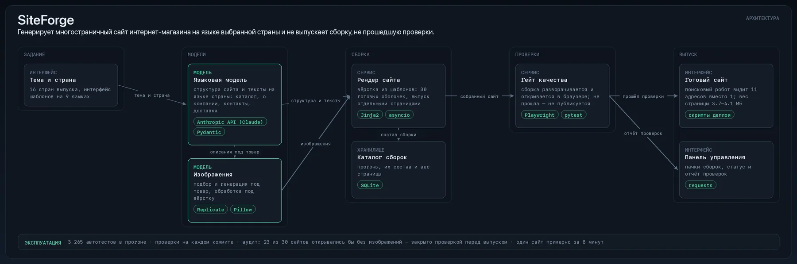
Развернуть проект ↓Свернуть ↑
Как работает SiteForge: генерирует многостраничный сайт интернет-магазина на языке выбранной страны и не выпускает сборку, не прошедшую проверки
генератор сайтов интернет-магазинов под рекламные кампании в 16 странах
апрель 2026 — сентябрь 2026 · 39 дней с правкамиодин: от постановки до эксплуатации
Сайт интернет-магазина под новую страну собирался вручную неделями. Генератор выпускает его примерно за 8 минут и не выпускает вовсе, если сборка не прошла проверки качества.
Что мешалоТексты нужны на языке страны, изображения — под конкретный товар, а качество готовой сборки проверить нечем.
Что сделалСобрал генератор многостраничных сайтов: по теме и стране языковая модель пишет структуру и тексты, изображения подбираются и генерируются под товар, вёрстка собирается из шаблонов. Перед выпуском сборка разворачивается и открывается в браузере автоматическими проверками.
Как устроено
На входе тема и страна: модель формирует структуру и тексты на языке этой страны.
Изображения подбираются и генерируются под товар, вёрстка собирается из шаблонов.
Перед выпуском сборка разворачивается и открывается в браузере: проверки работают с готовым результатом, а не с заготовками.
Выпуск идёт отдельными страницами вместо одного файла — поисковый робот видит 11 адресов вместо 1.
Масштаб
9языков интерфейса шаблонов, переведено полностью
16стран, под которые выходят сайты
30готовых шаблонов переведено в оболочки генератора
Инженерные решения
Гейт качества: сборка, не прошедшая автоматические проверки, не публикуется.
Аудит выявил, что 23 из 30 собранных сайтов открывались бы без изображений; после исправления в выпуск встроена проверка «развернуть и открыть в браузере».
Вес страницы снижен с 17.6 МБ до 3.7–4.1 МБ без потери изображений.
Автотесты: 3 265 проверок в прогоне. Красный прогон — выпуска нет.
Работает как системный сервис: автозапуск при старте машины и автоперезапуск после падения.
Проверки стоят на каждом коммите, а не «когда вспомню».
Результат
Один сайт на языке выбранной страны собирается примерно за 8 минут.
Перевёл выпуск с одного файла на отдельные страницы: главная стала легче в 9 раз (с 2054 КБ до 222 КБ), поисковый робот видит 11 адресов вместо 1.
Интерфейс шаблонов переведён полностью на 9 языков (1546 из 1546 фраз), сайты выходят для 16 стран.
Перевёл 30 готовых WordPress-шаблонов в оболочки для генератора: все 30 прошли попиксельную сверку с оригиналом через vision-модель.
Стек и зачем
Anthropic API (Claude) — Claude: генерация текста и проверка утверждений
Replicate — генерация изображений под товар
разработка с ИИ-агентами — код пишется агентами по спецификации, а не вручную
Pydantic — схемы данных и валидация ответов модели
Jinja2 — шаблоны страниц и документов
asyncio — параллельные запросы без блокировки
requests — HTTP-запросы к внешним сервисам
httpx — HTTP-клиент: запросы к API и страницам
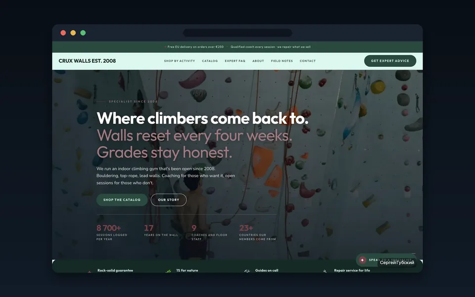
Первый экран сайта, собранного генератором: обложка, заголовок и четыре цифры о делеДругой сайт того же генератора: иной макет, шрифты и палитра — та же система, другая тема
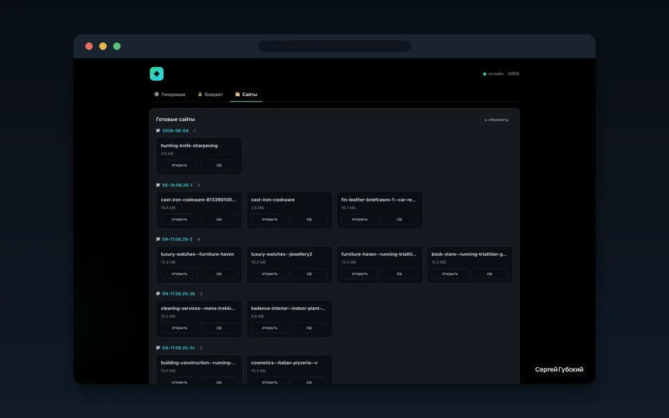
Панель управления: готовые сайты разложены по пачкам с датами, у каждого вес сборки и выгрузка архивом
Anthropic API (Claude)Replicateразработка с ИИ-агентамиPythonPydanticJinja2asynciorequestshttpx
Сервис для моей работы в рекламе: каждый день собирает объявления рынка, разбирает их vision-моделью (приём, эмоция, визуал) и по кнопке генерирует свои варианты текстов и картинок под запуск
в работе каждый день
2 274текстовых варианта сгенерировано в работе
590изображений сгенерировано в работе
OpenAI SDKvision-моделиOpenRouterразработка с ИИ-агентамиPythonFastAPIhttpx
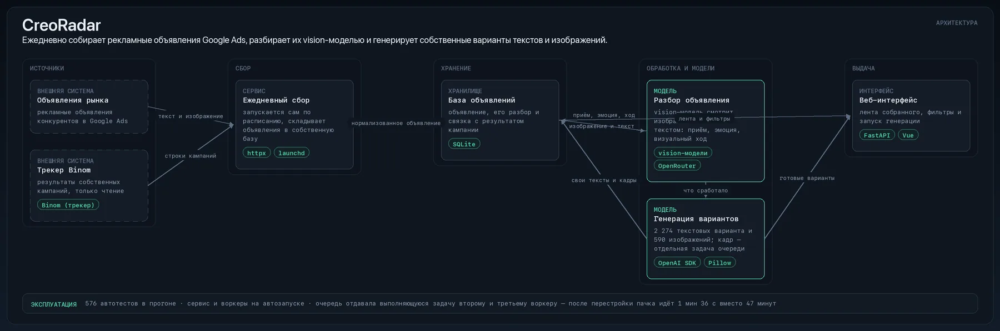
Развернуть проект ↓Свернуть ↑
Как работает CreoRadar: ежедневно собирает рекламные объявления Google Ads, разбирает их vision-моделью и генерирует собственные варианты текстов и изображений
анализ рекламных объявлений конкурентов в Google Ads и генерация собственных вариантов
июль 2026 — август 2026 · 9 дней с правкамиодин: от постановки до эксплуатации
Ручной просмотр объявлений конкурентов в Google Ads занимал рабочий день. Сервис собирает рынок ежедневно и готовит собственные варианты текстов и изображений по запросу.
Что мешалоСобранное негде хранить и не с чем сравнивать: объявления живут в чужих интерфейсах и исчезают.
Что сделалНастроил ежедневный сбор рекламных объявлений и их разбор vision-моделью, добавил пакетную генерацию собственных текстов и изображений. Перестроил очередь генерации, найдя по логам тройную оплату одной и той же задачи.
Как устроено
Ежедневный сбор объявлений рынка в собственную базу.
Vision-модель разбирает изображение вместе с текстом: приём, эмоция, визуальный ход.
Пакетная генерация собственных вариантов: каждый кадр — отдельная задача в очереди.
Веб-интерфейс: просмотр собранного и запуск генерации.
Масштаб
2 274текстовых варианта сгенерировано в работе
590изображений сгенерировано в работе
Инженерные решения
Нашёл по логам тройную оплату генерации: очередь отдавала выполняющуюся задачу второму и третьему воркеру, а повтор ждал 727 с на кадр.
После перестройки очереди пачка выполняется за 1 мин 36 с без потерь и ровно по смете — вместо 47 минут и 17 потерянных кадров из 25.
Встроенный рейтинг проверил на фактических данных: он шёл против дохода (ρ = −0,88), но сортировку на 6 точках менять не стал — для вывода нужно 30+.
Автотесты: 576 проверок в прогоне. Красный прогон — выпуска нет.
Работает как системный сервис: автозапуск при старте машины и автоперезапуск после падения.
Результат
В работе сгенерировано 2 274 текстовых варианта и 590 картинок.
Стек и зачем
OpenAI SDK — вызовы моделей по протоколу OpenAI
vision-модели — разбор рекламного изображения вместе с текстом: приём, эмоция, визуальный ход
OpenRouter — единый шлюз к моделям разных поставщиков
разработка с ИИ-агентами — код пишется агентами по спецификации, а не вручную
FastAPI — веб-слой и внутренний API
httpx — HTTP-клиент: запросы к API и страницам
Pydantic — схемы данных и валидация ответов модели
SQLite — локальное хранилище: единая схема и миграции
OpenAI SDKvision-моделиOpenRouterразработка с ИИ-агентамиPythonFastAPIhttpxPydanticSQLite
Защищённое веб-приложение для команды: у каждого свой вход и свои данные, у руководителя — общие сводки
сделано, сейчас не используется
9контейнеров поднимаются одной командой
41требование в трассировке, 39 выполнены полностью
разработка с ИИ-агентамиPythonFastAPIPydanticStarletteCeleryPostgreSQL
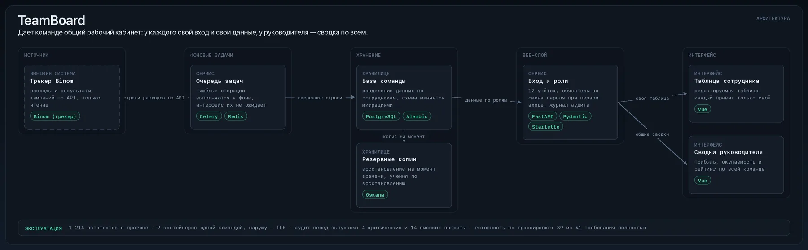
Развернуть проект ↓Свернуть ↑
Как работает TeamBoard: даёт команде общий рабочий кабинет: у каждого свой вход и свои данные, у руководителя — сводка по всем
многопользовательский кабинет команды: вход, роли, разделение данных
июнь 2026 — август 2026 · 7 дней с правкамиодин: от постановки до готового результата
Инструмент одного пользователя нельзя раздать команде. Веб-приложение даёт каждому свой вход и свои данные, а руководителю — сводку по всем.
Что мешалоВход, роли, разделение данных и резервные копии в однопользовательском инструменте отсутствуют полностью.
Что сделалСобрал многопользовательское веб-приложение с аутентификацией, ролями и фоновой очередью задач, закрыл дефекты независимого аудита и упаковал стек в запуск одной командой.
Как устроено
Аутентификация и роли: каждый работает со своими данными, руководитель видит общие сводки.
Тяжёлые операции выполняются в фоновой очереди, интерфейс их не ожидает.
Данные хранятся в PostgreSQL, схема меняется миграциями, рядом кэш и резервные копии.
Стек поднимается одной командой в контейнерах, наружу смотрит обратный прокси-сервер с TLS.
Масштаб
9контейнеров поднимаются одной командой
41требование в трассировке, 39 выполнены полностью
Результат
Перед выпуском закрыл дефекты, найденные независимым аудитом: 4 критических и 14 высоких — вход, пароли, бэкапы.
Весь стек — веб, фоновые задачи, база, кэш, бэкапы и TLS-прокси — поднимается одной командой, 9 контейнеров.
Стек и зачем
разработка с ИИ-агентами — код пишется агентами по спецификации, а не вручную
FastAPI — веб-слой и внутренний API
Pydantic — схемы данных и валидация ответов модели
Starlette — ASGI-слой под веб-приложением
Celery — фоновая очередь тяжёлых задач
разработка с ИИ-агентамиPythonFastAPIPydanticStarletteCeleryPostgreSQLAlembicRedis
Сервис сам собирает предложения о работе с бирж, сайтов вакансий и Telegram-каналов в одну ленту, раскладывает по направлениям и ставит каждой записи оценку 0–100
в работе каждый день
38 555объявлений собрано за 2,5 месяца
4 615новых записей за последнюю неделю
разработка с ИИ-агентамиPythonHTMLhttpxFastAPIfeedparserselectolax
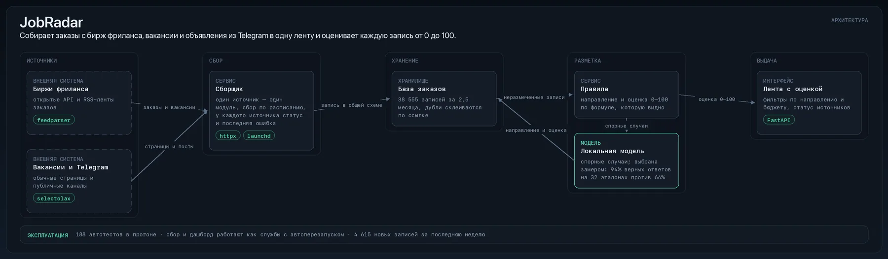
Развернуть проект ↓Свернуть ↑
Как работает JobRadar: собирает заказы с бирж фриланса, вакансии и объявления из Telegram в одну ленту и оценивает каждую запись от 0 до 100
агрегатор заказов с бирж фриланса и вакансий с оценкой релевантности
июль 2026 — август 2026 · 6 дней с правкамиодин: от постановки до эксплуатации
Обход бирж фриланса, сайтов вакансий и Telegram-каналов вручную занимал часы ради нескольких подходящих предложений. Сервис сводит их в одну ленту с оценкой 0–100.
Что мешалоИсточники отдают разное — RSS, открытые API, обычные страницы; дубли и закрытые заказы съедают больше времени, чем сами предложения.
Что сделалСвёл источники в единую ленту, разложил записи по направлениям и присвоил каждой оценку 0–100. Там, где правил недостаточно, разметку выполняет локальная языковая модель, выбранная замером.
Как устроено
Сбор по расписанию: один источник — один модуль.
Записи приводятся к общей схеме, дубли склеиваются, закрытые заказы уходят из ленты.
Разметка по направлениям выполняется правилами, спорные случаи передаются локальной модели.
Результат — лента с оценкой 0–100, фильтрами и статусом источников.
Масштаб
38 555объявлений собрано за 2,5 месяца
4 615новых записей за последнюю неделю
Результат
За 2,5 месяца автоматического сбора в базе 38 555 объявлений о работе и проектах.
Где правила не справляются с разметкой, подключил локальную модель, выбранную замером: 94% верных ответов на 32 эталонах против 66% у альтернативы.
Стек и зачем
разработка с ИИ-агентами — код пишется агентами по спецификации, а не вручную
httpx — HTTP-клиент: запросы к API и страницам
FastAPI — веб-слой и внутренний API
feedparser — RSS бирж фриланса и сайтов вакансий
selectolax — быстрый разбор HTML
разработка с ИИ-агентамиPythonHTMLhttpxFastAPIfeedparserselectolaxgitlaunchd
Лаборатория проверки гипотез на исторических данных: каждая идея описывается заранее, проверяется одним движком и отсеивается, если не проходит защиту от подгонки и сравнение со случайным входом
сделано, сейчас не используется
13 864сделки в перепроверке вместо 246
37гипотез в каталоге: 16 опровергнуты, 2 проверены
Anthropic API (Claude)LightGBMscikit-learnразработка с ИИ-агентамиPythonhttpxrequests
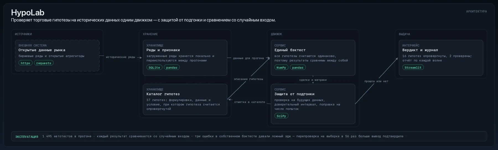
Развернуть проект ↓Свернуть ↑
Как работает HypoLab: проверяет торговые гипотезы на исторических данных одним движком — с защитой от подгонки и сравнением со случайным входом
стенд проверки торговых гипотез на исторических данных
сентябрь 2026 · 5 дней с правкамиодин: от постановки до готового результата
Результат на исторических данных почти всегда объясняется ошибкой в методике, а не находкой. Стенд отделяет находку от подгонки.
Что мешалоКаждая гипотеза считалась по-своему, поэтому результаты нельзя было сравнивать между собой.
Что сделалСделал единый движок проверки: гипотеза описывается заранее, считается одинаково и отсеивается, если не проходит защиту от подгонки и сравнение со случайным входом.
Как устроено
Гипотеза заводится в каталог заранее: формулировка, данные, условие опровержения.
Проверка выполняется одним движком на исторических данных, поэтому результаты сравнимы между собой.
Каждый результат сравнивается со случайным входом и проходит защиту от подгонки.
Масштаб
37гипотез в каталоге: 16 опровергнуты, 2 проверены
13 864сделки в перепроверке вместо 246
Результат
После починки перепроверил вывод на выборке в 56 раз больше — 13 864 сделки против 246 — и вывод устоял.
Каталог гипотез — 37 штук: 16 опровергнуты, 2 проверены, 19 не проверялись; в первой волне из 7 кандидатов не принят ни один.
Стек и зачем
Anthropic API (Claude) — Claude: генерация текста и проверка утверждений
Настольное приложение, которое пакетно выполняет рутину в рекламных кабинетах
в работе каждый день
1 773автоматические проверки состояния
≈6 минна пакет из 10+ аккаунтов, около 34 секунд на аккаунт
739объявлений в 459 аккаунтах
разработка с ИИ-агентамиPythonPlaywrightgitpytestGoogle AdsBinom (трекер)
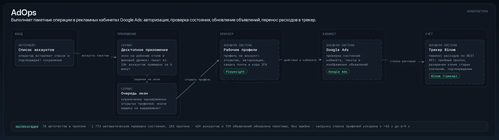
Развернуть проект ↓Свернуть ↑
Как работает AdOps: выполняет пакетные операции в рекламных кабинетах Google Ads: авторизация, проверка состояния, обновление объявлений, перенос расходов в трекер
пакетные операции в рекламных кабинетах Google Ads
июнь 2026 — август 2026 · 22 дней с правкамиодин: от постановки до эксплуатации
Однотипные операции в десятках рекламных кабинетов Google Ads занимали рабочий день. Приложение выполняет пакет из 10+ аккаунтов примерно за 6 минут.
Что мешалоКаждый кабинет — отдельный профиль браузера: открыть, авторизоваться, проверить состояние, внести одинаковую правку.
Что сделалРазработал десктопное приложение (Python, Tkinter), которое выполняет пакетные операции в кабинетах Google Ads: открывает профили браузера, авторизуется, проверяет состояние кабинета, обновляет тексты и изображения объявлений и переносит расходы в трекер через REST API.
Как устроено
На входе — список аккаунтов; дальше пакет выполняется без участия оператора.
Браузером управляет Playwright через отладочный протокол: те же действия, что выполняет человек в интерфейсе.
Расходы переносятся в трекер Binom через REST API, а не переписываются в таблицу вручную.
Масштаб
≈6 минна пакет из 10+ аккаунтов, около 34 секунд на аккаунт
1 773автоматические проверки состояния
739объявлений в 459 аккаунтах
Результат
1 773 автоматические проверки состояния за полтора месяца, 183 прогона.
459 аккаунтов и 739 объявлений обновлено пачками, без ошибок.
Стек и зачем
разработка с ИИ-агентами — код пишется агентами по спецификации, а не вручную
Playwright — управление браузером через отладочный протокол: операции в кабинетах Google Ads
Google Ads — работа в рекламном кабинете: состояние, объявления, расходы
Binom (трекер) — расходы из кабинетов уходят в трекер через REST API
pytest — автотесты: прогон перед каждым выпуском
разработка с ИИ-агентамиPythonPlaywrightgitpytestGoogle AdsBinom (трекер)Playwright (CDP)Tkinter
Сводит данные рекламного трекера и рабочей таблицы в одну базу по слоям (сырое → сверенное → витрина) и публикует дашборд, только когда сошлись все автоматические сверки
сделано, сейчас не используется
9автоматических сверок на каждом обновлении
318дней истории пережили сжатие базы в 19 раз
разработка с ИИ-агентамиPythonSQLitePillowgitpytestBinom (трекер)
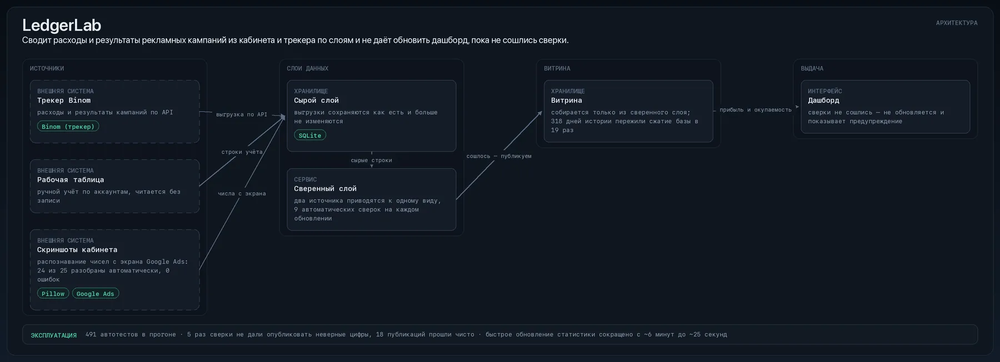
Развернуть проект ↓Свернуть ↑
Как работает LedgerLab: сводит расходы и результаты рекламных кампаний из кабинета и трекера по слоям и не даёт обновить дашборд, пока не сошлись сверки
учёт расходов и результатов рекламных кампаний по слоям данных
июнь 2026 — август 2026 · 14 дней с правкамиодин: от постановки до готового результата
Данные рекламного кабинета Google Ads и трекера расходятся между собой, и ошибка всплывает уже в отчёте. Учёт по слоям не даёт опубликовать несведённые цифры.
Что мешалоРасхождение двух источников обнаруживалось постфактум, а восстановить предыдущее состояние было нечем.
Что сделалПостроил учёт по слоям — сырые выгрузки, сверенный слой, витрина — и обязательные автоматические сверки на каждом обновлении.
Как устроено
Сырые выгрузки сохраняются как есть и больше не изменяются.
Слой сверки приводит два источника к одному виду и находит расхождения.
Витрина для дашборда собирается только из сверенного слоя.
Сверки не сошлись — публикация останавливается, на дашборде выводится предупреждение.
Масштаб
9автоматических сверок на каждом обновлении
318дней истории пережили сжатие базы в 19 раз
Результат
Нашёл и закрыл завышение прибыли по объявлениям на 8%: объявления покрывали 95% расходов аккаунта, за один день довёл покрытие до 100%.
Сжал базу в 19 раз (с 2,70 ГБ до 139,6 МБ) без потери данных: сверки зелёные, 318 дней истории целы, замена одной транзакцией за 18 секунд.
Стек и зачем
разработка с ИИ-агентами — код пишется агентами по спецификации, а не вручную
SQLite — локальное хранилище: единая схема и миграции
Проверяет пачку доменов разом и по каждому говорит, открывается ли живой сайт, а если нет — почему: домен не существует, ошибка сертификата, припаркованная страница, заглушка хостинга
в работе каждый день
69пачек проверок прошло через сервис с августа 2026
375признаков типовых заглушек в 21 группе
PythonhttpxasynciopytestrespxFastAPIselectolax
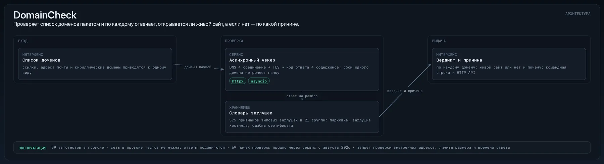
Развернуть проект ↓Свернуть ↑
Как работает DomainCheck: проверяет список доменов пакетом и по каждому отвечает, открывается ли живой сайт, а если нет — по какой причине
пакетная проверка доменов: вердикт и причина по каждому
июнь 2026один: от постановки до эксплуатации
Ответ «страница открылась» ничего не значит: заглушка хостинга выглядит так же, как живой сайт. Сервис по каждому домену отвечает, что там на самом деле.
Что мешалоПрипаркованный домен, заглушка и ошибка сертификата по коду ответа неотличимы от рабочего сайта.
Что сделалРазработал сервис с командной строкой и HTTP API: по каждому домену выдаёт вердикт и причину — домена нет, ошибка сертификата, припаркованная страница, заглушка хостинга.
Как устроено
Домены проверяются пакетом и параллельно, число потоков задаётся.
Ответ разбирается по признакам заглушек, а не по коду ответа.
Итог по каждому домену — вердикт и причина; доступны командная строка и HTTP API для встраивания.
Масштаб
375признаков типовых заглушек в 21 группе
69пачек проверок прошло через сервис с августа 2026
Результат
Причину «сайт не работает» различает по 375 признакам типовых заглушек в 21 группе.
С августа 2026 через сервис прошло 69 пачек проверок, все 69 запросов вернули результат.
Стек и зачем
httpx — HTTP-клиент: запросы к API и страницам
asyncio — параллельные запросы без блокировки
pytest — автотесты: прогон перед каждым выпуском
respx — моки HTTP в тестах: сеть в прогоне не нужна
Telegram-бот: описываешь своими словами, что ищешь, а он проходит по каналам с заказами и вакансиями, отсеивает неподходящее языковой моделью в три этапа и присылает только подходящее
Как работает ChannelScout: принимает запрос на естественном языке, обходит публичные Telegram-каналы и присылает только подходящие предложения
отбор предложений из Telegram-каналов языковой моделью в три этапа
май 2026один: от постановки до готового результата
Поиск по ключевым словам в десятках Telegram-каналов даёт мусор вперемешку с нужным. Бот принимает запрос на естественном языке и присылает только подходящее.
Что мешалоСписки ключевых слов не описывают то, что человек ищет на самом деле.
Что сделалРазработал Telegram-бота: запрос формулируется своими словами, бот обходит публичные каналы, отсеивает неподходящее языковой моделью в три этапа и присылает результат.
Как устроено
Запрос на естественном языке превращается в фильтр — без списков ключевых слов.
Бот обходит публичные каналы и отсеивает поток в три этапа: дешёвые проверки раньше дорогих.
Подходящее приходит в Telegram, показанное ранее не повторяется.
Масштаб
4 591сообщение просмотрено за первые сутки
132канала в обходе за сутки
Результат
За первые сутки просмотрел 4 591 сообщение из 132 каналов и одно и то же повторно не показывает.
Стек и зачем
OpenAI SDK — вызовы моделей по протоколу OpenAI
OpenRouter — единый шлюз к моделям разных поставщиков
asyncio — параллельные запросы без блокировки
Telethon — чтение публичных Telegram-каналов
aiogram — Telegram-бот: команды и ответы
OpenAI SDKOpenRouterPythonasyncioTelethonaiogramaiohttp.env-конфигурацияLLM API
Локальный веб-сервис: вводишь описание — получаешь до 4 вариантов картинки от выбранной модели через единый шлюз, поэтому модель можно менять, не переписывая клиент
Как работает ImageForge: возвращает по описанию до четырёх вариантов изображения от выбранной модели и хранит историю со стоимостью каждой генерации
генерация изображений через единый шлюз к моделям с учётом стоимости
март 2026 — июль 2026один: от постановки до эксплуатации
Смена модели генерации требовала правки клиента, а стоимость изображения была видна только в счёте. Модель стала настройкой, а цена — полем в истории.
Что мешалоУ каждого поставщика свой интерфейс, и в конце месяца непонятно, за что заплачено.
Что сделалПоднял локальный веб-сервис: описание превращается в до 4 вариантов изображения от выбранной модели через единый шлюз, каждая генерация со стоимостью пишется в историю.
Как устроено
Локальный веб-сервис: по описанию возвращается до 4 вариантов изображения.
Все модели вызываются через единый шлюз, поэтому смена модели — изменение настройки, а не правка клиента.
Каждая генерация со стоимостью сохраняется в историю, история доступна в интерфейсе.
Масштаб
1 265изображений прошло через сервис за полгода
851запрос к моделям через один шлюз
Результат
Через сервис прошло ~1 265 изображений за март–август 2026.
Основная модель по факту работы — FLUX 2 Pro (461 запрос из 851), за ней Gemini 3 Pro Image (254).
Стек и зачем
OpenAI SDK — вызовы моделей по протоколу OpenAI
OpenRouter — единый шлюз к моделям разных поставщиков
vision-модели — разбор изображения моделью: оценка и объяснение
Express — веб-сервер на Node.js
vanilla JS — интерфейс без фреймворка
OpenAI SDKOpenRoutervision-моделиJavaScriptCSSExpressvanilla JSNode.jsOpenRouter API
Указываешь папки — приложение сжимает все изображения внутри и вычищает из них метаданные (EXIF, GPS, XMP, ICC), а оригинал удаляется только после проверки, что новый файл цел
сделано, сейчас не используется
Замерил реальный выигрыш сжатия уже сжатых фото: качество 70 даёт ≈−3%, 60 — ≈−14%, 50 — ≈−26%, поэтому по умолчанию такие файлы только очищаются без потерь.
PythonPillowpytestTkinterPyInstaller
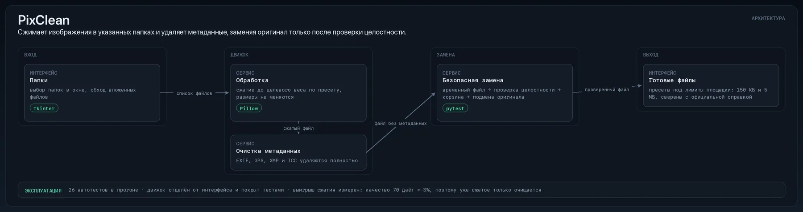
Развернуть проект ↓Свернуть ↑
Как работает PixClean: сжимает изображения в указанных папках и удаляет метаданные, заменяя оригинал только после проверки целостности
пакетная оптимизация изображений и очистка метаданных
июль 2026один: от постановки до готового результата
Изображения для загрузки несут EXIF и GPS, а лимит по весу выясняется уже при отправке. Приложение обрабатывает папку целиком.
Что мешалоОбработка по одному файлу занимает вечер, а метаданные вспоминают последними.
Что сделалРазработал десктопное приложение: сжимает изображения в указанных папках, удаляет EXIF, GPS, XMP и ICC и заменяет оригинал только после проверки целостности нового файла.
Как устроено
На входе — список папок; приложение обходит все изображения внутри.
Метаданные удаляются, файл сжимается до целевого веса по пресету.
Оригинал заменяется только после проверки, что новый файл цел.
Результат
Режим «уложить в целевой вес» с пресетами под лимиты Google Ads (150 КБ и 5 МБ), лимиты сверены с официальной справкой.
Сбор данных о проектах из разрозненных источников, признаки и модель ранжирования — с честной проверкой во времени: первые высокие метрики оказались утечкой данных, и пайплайн пересобран
сделано, сейчас не используется
0.576честный AUC после чистки против 0.430 у случайного уровня
PythonSQLitepandassklearn
Развернуть проект ↓Свернуть ↑
Как работает RankLab: сводит данные о проектах в таблицу признаков и ранжирует их моделью с проверкой во времени
ETL, признаки и ранжирование с проверкой модели во времени
один: от постановки до готового результата
Первые метрики модели оказались утечкой данных из будущего. Конвейер пересобран так, чтобы модель проверялась во времени.
Что мешалоВысокий AUC на перемешанных данных не значит ничего, а по отчёту это не видно.
Что сделалСобрал сбор данных, расчёт признаков и модель ранжирования с проверкой во времени, нашёл утечку данных в первой версии и пересобрал конвейер.
Как устроено
Данные из разрозненных источников сводятся в одну таблицу признаков.
Модель проверяется во времени: обучение на прошлом, оценка на будущем.
Каждая метрика сравнивается со случайным уровнем.
Масштаб
0.576честный AUC после чистки против 0.430 у случайного уровня
Результат
Ранний «прорыв» AUC 0.828 оказался утечкой данных; после чистки модель даёт честные 0.576 против 0.430 у случайного уровня.
Стек и зачем
SQLite — локальное хранилище: единая схема и миграции
Уровень посчитан по коду проектов, а не по памяти: «уверенно» — технология лежит в ядре трёх и более систем либо двух, одна из которых работает и покрыта тестами. Цифра рядом с названием — в скольких проектах она в ядре.
AI и LLM
Уверенно
разработка с ИИ-агентами19OpenAI SDK6Anthropic API (Claude)3OpenRouter3vision-модели2
Это моя собственная оценка, выставленная вручную: из кода она не выводится и проектами здесь не подтверждается. То, что подтверждено кодом, — в блоке выше.
Инженерная дисциплина, из-за которой система доживает до
эксплуатации. Под каждым пунктом — случай из проекта или число, снятое
с кода, а не обещание.
Автотесты, а не «у меня работает»
В системах на этой странице 16 398 автоматических проверок. Красный прогон означает, что выпуска нет — это правило, а не пожелание.
Число снято с кода проектов при сборке страницы, а не записано по памяти.
Эксплуатирую сам
Из систем на этой странице 4 — фоновые сервисы с автозапуском и автоперезапуском: расписания, логи, резервные копии. Я не сдаю папку с кодом — я отвечаю за то, что она работает завтра.
Признаки сервисов (файлы запуска, расписания, резервные копии) сняты с кода проектов при сборке.
Гейт качества перед выпуском
Система не выпускает результат, который не прошёл автоматические проверки. Проверка идёт не на бумаге, а на собранном продукте.
Аудит нашёл, что 23 из 30 собранных сайтов на хостинге открывались бы без картинок; исправил и ввёл проверку «развернуть и открыть в браузере».
Проверка фактов вместо доверия модели
Всё, что написала модель, сверяется с собранными источниками отдельным проходом. Текст с утверждением, которого в источниках нет, до выпуска не доходит.
Нашёл дыру в словаре «жёстких фактов»: эвфемизмы смерти, суда и диагноза проходили в 19 случаях из 20; закрыл её без ложных срабатываний.
Цифры сходятся до того, как их увидят
Данные из разных источников сверяются автоматически, и отчёт не обновляется, пока сверки не сошлись.
Каждое обновление проходит 9 автоматических сверок: 5 раз они не дали опубликовать неверные цифры, 18 публикаций прошли чисто.
Свой результат проверяю на подлог
Слишком хорошая метрика — повод искать ошибку в методике, а не повод радоваться. Отрицательный результат я довожу до конца и показываю.
Ранний «прорыв» AUC 0.828 оказался утечкой данных; после чистки модель даёт честные 0.576 против 0.430 у случайного уровня.
Популярную методику проверяю, а не пересказываю
Если проверка говорит «эджа нет», это и есть результат работы: он экономит месяцы и деньги.
Популярную методику «умных денег» проверил как сигнал входа: при реалистичном исполнении −0.150 против −0.146 у случайного входа, то есть эджа нет.
Обо мне
Красный диплом СФУ, «Строительство уникальных зданий и сооружений», 2021; по специальности не работал
С 2021 года — performance-маркетинг: Яндекс Директ, VK Реклама, Telegram Ads; последний год — Google Ads: закупка трафика, учёт расходов и окупаемости.
С 2024 года — собственные системы с ИИ-агентами: 29 проектов, от парсеров и агрегаторов данных до генераторов контента и дашбордов.
Чем это полезно: я прихожу из области, где результат считают деньгами, поэтому смотрю на систему как на вложение — что она экономит, сколько стоит её прогон и когда она окупится.
Связаться
Покажу любую систему вживую за 15 минут: рабочий экран, логи и разбор решений, а не слайды.
Напишите на почту или в Telegram — отвечаю в течение дня.